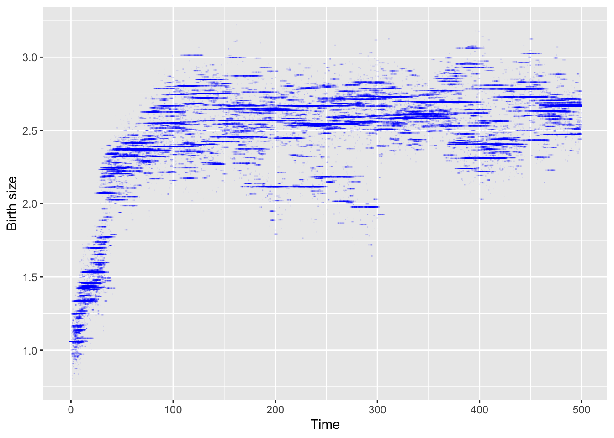
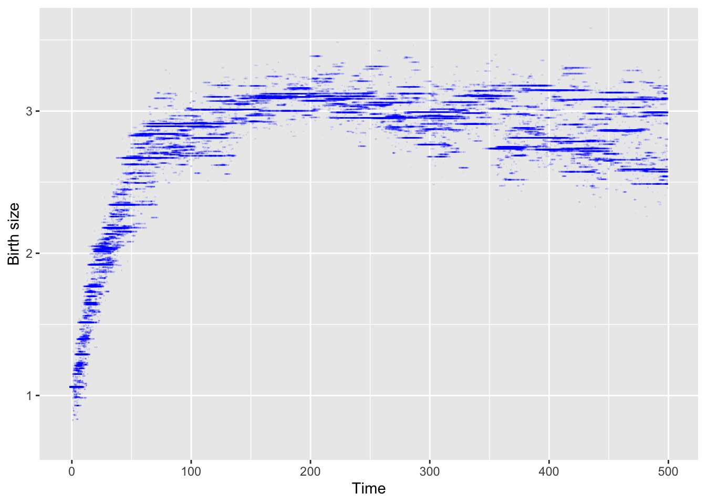
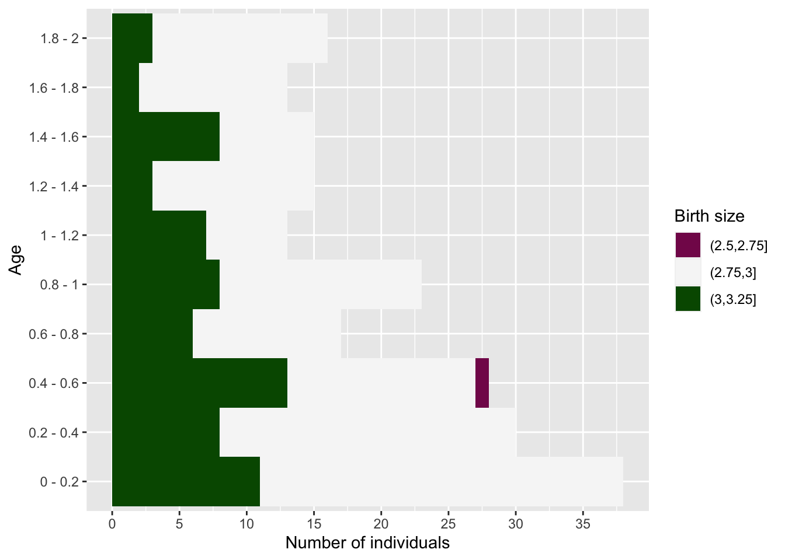
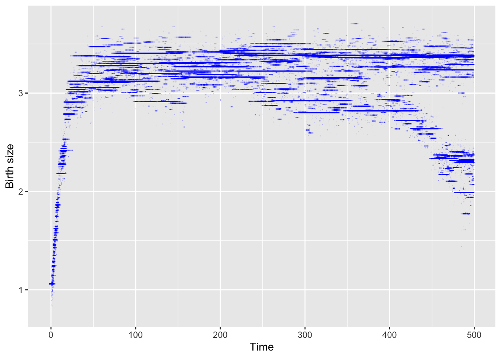

vignettes/IBMPopSim_interaction.Rmd
IBMPopSim_interaction.RmdThis document provides an example of usage of the package IBMPopSim, for simulating an interacting age-structured population with genetically variable traits, based on in [@MR2562651].
We recall here the example 1 of [@MR2562651].
Individuals are characterized by their body size at birth \(x_0 \in [0,4]\), which is a heritable trait subject to mutation, and by their physical age \(a \in [0,2]\).
The body size is an increasing function of age, and the size of an individual of age \(a\) is
\[x=x_0 + ga,\]
where \(g\) is the growth rate, which is assumed to be constant and identical for all individuals.
There are 2 possible events :
\[b(x_0) = \alpha (4 - x_0)\]
depending on a parameter \(\alpha\) and his initial size. Smaller individuals have a higher birth intensity. When a birth occurs, the new individual have the same size than his parent with a high probability \(1-p\). A mutation can occur with probability \(p\) and then the birth size of the new individual is
\[x_0' = \min(\max(0, x_0 + G), 4),\]
where \(G\) is a Gaussian random variable \(\mathcal{N}(0,\sigma^2)\).
\[ U (x_0 + g a, x_0' - g a'),\]
where the interaction function \(U\) is defined by
\[U(x,y) = \beta \left( 1- \frac{1}{1+ c\exp(-4(x-y))}\right).\]
The death intensity of an individual of size \(x_0 + ga\) at time \(t\) is thus the result of interactions with all individuals in the population (including himself)
\[d(x_0,a,t,pop) = \sum_{(x_0', a') \in pop} U (x_0 + g a, x_0' + g a').\]
# Generate population N <- 900 # Number of individuals in the initial population x0 <- 1.06 agemin <- 0. agemax <- 2.
pop_init <- data.frame( "birth" = -runif(N, agemin, agemax), # Age of each individual chosen uniformly in [0,2] "death" = as.double(NA), "birth_size" = x0 # All individuals have initially the same birth size x0. ) get_characteristics(pop_init) ## birth_size ## "double"
There are 2 possible events :
Each event is caracterised by its intensity and kernel code, as follows.
An individual of size \(x_0 \in [0,4]\) gives birth at the age independent rate given by
\[b(x_0) = \alpha (4 - x_0)\]
Since the intensity only depends on the individual’s characteristics, the event is of type individual.
With probability \(p = 0.03\) a mutation occurs, and with probability \(1 - p\), the offspring inherits its parent’s trait, \(x_0\).
In the case of a mutation, the new trait is \(x_0' = \min(\max(0, x_0 + G), 4)\), where \(G\) is a Gaussian r.v. with expectation 0 and variance \(\sigma^2=0.01\).
The birth event is then an individual event of type birth, created as follows:
birth_event <- mk_event_individual( type = "birth", intensity_code = 'result = alpha*(4 - I.birth_size);', kernel_code = 'if (CUnif() < p) newI.birth_size = min(max(0., CNorm(I.birth_size, sigma)), 4.); else newI.birth_size = I.birth_size;' )
The death intensity of an individual with trait \(x_0 \in [0, 4]\) and age \(a \in [0, 2]\) is given by:
\[d(x_0,a,t,pop) = \sum_{(x_0', a') \in pop} U (x_0 + g a, x_0' + g a').\]
where
\[U(x,y) = \beta \left( 1- \frac{1}{1+c\exp(-4(x-y))}\right) \in \left[ 0, \beta\right] \]
This event intensity depends on the interaction kernel \(U\), and is of type interaction.
params_death <- list( "g" = 1, "beta" = 2./300., "c" = 1.2 )
death_event <- mk_event_interaction( # Event with intensity of type interaction type = "death", interaction_code = "double x_I = I.birth_size + g * age(I,t); // In C++ variables are typed double x_J = J.birth_size + g * age(J,t); result = beta * ( 1.- 1./(1. + c * exp(-4. * (x_I-x_J))));" # Implementation of U )
model <- mk_model( characteristics = get_characteristics(pop_init), events = list(birth_event, death_event), parameters = c(params_birth, params_death) # Model parameters ) summary(model) ## Events: ## #1: individual event of type birth ## #2: interaction event of type death ## --------------------------------------- ## Individual description: ## names: birth death birth_size ## R types: double double double ## C types: double double double ## --------------------------------------- ## R parameters available in C++ code: ## names: p sigma alpha g beta c ## R types: double double double double double double ## C types: double double double double double double
Event bounds
Bounds for the birth intensity and the death interaction function \(U\) have to be computed.
birth_intensity_max <- 4*params_birth$alpha interaction_fun_max <- params_death$beta
T = 500 # Multithreading is NOT possible due to interaction between individuals sim_out <- popsim(model = model, population = pop_init, events_bounds = c('birth' = birth_intensity_max, 'death' =interaction_fun_max), # Birth intensity and death interaction function bounds parameters = c(params_birth, params_death), # Model age_max = 2, time = T) ## Simulation on [0, 500]
sim_out$logs["duration_main_algorithm"] ## duration_main_algorithm ## 0.187811
sim_out$population is a data frame containing the date of birth, death, and characteristics of all individuals who lived in the population over the period [0,500].
str(sim_out$population) ## 'data.frame': 313082 obs. of 3 variables: ## $ birth : num 498 498 498 498 498 ... ## $ death : num NA NA NA NA NA NA NA NA NA NA ... ## $ birth_size: num 2.66 2.61 2.52 2.34 2.66 ... pop_out <- sim_out$population
Population size at \(t=500\).
pop_size <- nrow(population_alive(pop_out,t = 500)) pop_size ## [1] 346
Result from [@MR2562651] can be reproduce from the simulation.
For each individual in the population, we draw below a line representing its birth size during its life time.
ggplot(pop_out)+ geom_segment(aes(x= birth,xend=death,y= birth_size,yend=birth_size), na.rm = TRUE, colour="blue", alpha=0.1)+ xlab("Time") + ylab("Birth size")

The model can be simulated with different parameters without being recompiled.
The ageing velocity has an impact on the distibution of birth sizes of over time.
params_death$g <- 0.3
Events bounds are not modified since they do not depend on \(g\).
sim_out <- popsim(model = model, population = pop_init, events_bounds = c('birth' = birth_intensity_max, 'death' =interaction_fun_max), parameters = c(params_birth, params_death), age_max = 2, time = T) ## Simulation on [0, 500]
pop_out <- sim_out$population
ggplot(pop_out)+ geom_segment(aes(x= birth,xend=death,y= birth_size,yend=birth_size), na.rm = TRUE, colour="blue", alpha=0.1)+ xlab("Time") + ylab("Birth size")

Evolution of age pyramid by birth size
age_pyramid returns the age pyramid data frame of the population, by birth size at a given time.
We can see in the example below that several individuals have the same size, at time 500, corresponding to individuals of the same line with no mutations.
pyr <- age_pyramid(pop_out, ages = seq(0,2,by=0.2), time = 500) head(pyr) ## age birth_size value ## 1 0 - 0.2 2.748365 0 ## 2 0 - 0.2 2.769760 0 ## 3 0 - 0.2 2.792118 0 ## 4 0 - 0.2 2.864267 5 ## 5 0 - 0.2 2.871409 0 ## 6 0 - 0.2 2.871854 1
The age pyramid can be plotted, with a visualization of the individuals birth size. We start by defining discrete birth sizes subgroups, and by assigning a color to each subgroup.
pyr$group_name <- as.character(cut(pyr$birth_size+1e-6, breaks = seq(0,4,by=0.25))) head(pyr) ## age birth_size value group_name ## 1 0 - 0.2 2.748365 0 (2.5,2.75] ## 2 0 - 0.2 2.769760 0 (2.75,3] ## 3 0 - 0.2 2.792118 0 (2.75,3] ## 4 0 - 0.2 2.864267 5 (2.75,3] ## 5 0 - 0.2 2.871409 0 (2.75,3] ## 6 0 - 0.2 2.871854 1 (2.75,3]
library(colorspace)
lbls <- sort(unique(pyr$group_name)) colors <- c(diverging_hcl(n=length(lbls), palette = "Red-Green")) # attributes a color to each subgroup names(colors) <- lbls
The function plot_pyramid allows the user to plot the age pyramid at a given time of a population composed of several subgroups, given a population data frame with a column named group_name(only needed for displaying several subgroups).
plot_pyramid(pyr, group_colors = colors, group_legend = 'Birth size')

Due to the interaction between individuals, only bigger individuals survive at higher ages.
Several age pyramids at different time can be computed similarly at different times by calling age_pyramids.
pyrs <- age_pyramids(pop_out, ages = seq(0,2,by=0.2), time = 50:500)
pyrs$group_name <- as.character(cut(pyrs$birth_size+1e-6, breaks = seq(0,4,by=0.25)))
lbls <- sort(unique(pyrs$group_name)) colors <- c(diverging_hcl(n=length(lbls), palette = "Red-Green")) # attributes a color to each group names(colors) <- lbls
#library(gganimate)
#anim <- plot_pyramid(pyrs, group_colors = colors,
#group_legend = 'Birth size') +
#transition_time(time) + labs(title = "Time: {frame_time}")#animate(anim, nframes = 450, fps = 10)
We can do the same simulation with a bigger initial population. In order for the population size to stay approximately constant, the birth (resp. death) intensity in increased (resp. decreased).
N <- 2000 pop_init_big <- data.frame( "birth" = -runif(N, agemin, agemax), # Age of each individual chosen uniformly in [0,2] "death" = as.double(NA), "birth_size" = x0 # All individuals have initially the same birth size x0. )
params_birth$alpha <- 4 params_birth$p <- 0.01 # Mutation probability params_death$beta <- 1/100 params_death$g <- 1
The birth intensity bound and interaction function bound must be updated before simation.
birth_intensity_max <- 4*params_birth$alpha interaction_fun_max <- params_death$beta
sim_out <- popsim(model = model, population = pop_init_big, events_bounds = c('birth' = birth_intensity_max, 'death' =interaction_fun_max), parameters = c(params_birth, params_death), age_max = 2, time = T) ## Simulation on [0, 500]
pop_size <- nrow(population_alive(sim_out$population,t = 500)) pop_size ## [1] 567
ggplot(sim_out$population)+ geom_segment(aes(x= birth,xend=death,y= birth_size,yend=birth_size), na.rm = TRUE, colour="blue", alpha=0.1)+ xlab("Time") + ylab("Birth size")

In the presence of interactions, the randomized algorithm (activated by default in mk_event_interaction) is much faster than the standard algorithm (named full) which requires to iterate through the population vector at each candidate event time.
# Comparison full vs random death_event_full <- mk_event_interaction(type = "death", interaction_type= "full", interaction_code = "double x_I = I.birth_size + g * age(I,t); // In C++ variables are typed double x_J = J.birth_size + g * age(J,t); result = beta * ( 1.- 1./(1. + c * exp(-4. * (x_I-x_J))));" ) model_full <- mk_model(characteristics = get_characteristics(pop_init), events = list(birth_event, death_event_full), parameters = c(params_birth, params_death))
sim_out_full <- popsim(model = model_full, population = pop_init_big, events_bounds = c('birth' = birth_intensity_max, 'death' =interaction_fun_max), parameters = c(params_birth, params_death), age_max = 2, time = T) ## Simulation on [0, 500]
sim_out_full$logs["duration_main_algorithm"]/sim_out$logs["duration_main_algorithm"] ## duration_main_algorithm ## 34.78827